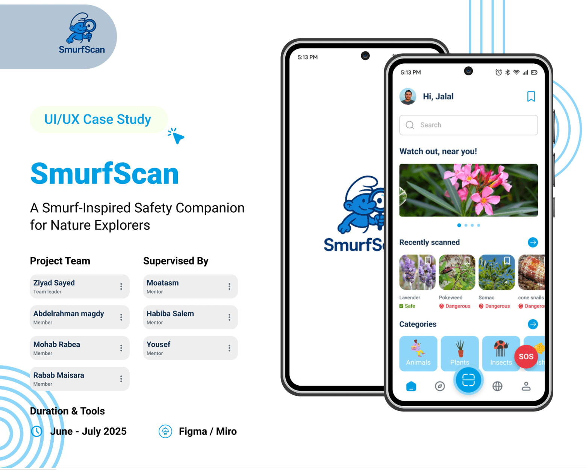

Designing interfaces that make sense to users—and to the developers building them.
Hey, I'm Abdelrhman. I take messy product problems, untangle the user flows, and build scalable design systems backed by a solid understanding of front-end code.
Before opening Figma, I want to know what we're building, why users are getting stuck, and what constraints the engineering team is working with. Great UI is what happens when those three things line up.
What is the person on the other side of the screen actually trying to get done? Where do they hesitate, get confused, or drop off?
How does this feature move the needle? Good design reduces support tickets, speeds up workflows, and helps the product grow.
How will this actually be built? I account for component states, edge cases, and responsive behavior so nothing gets lost in handoff.
I got into product design because I care about how software actually feels to use. I enjoy taking a product from a rough, ambiguous idea all the way through user research, wireframing, and a clean, tokenized UI system.
Because I studied Computer Science and write front-end code (React, Tailwind, CSS), I don't design in a vacuum. I think in reusable components, 8-point grids, and realistic states—which means smoother handoffs and products that look as good in production as they do in Figma.
Digging into user pain points & workflows
Scoping features & technical constraints
Mapping user flows & low-fi wireframes
Testing interactive flows with real users
Variables, tokens & scalable UI components
Specs, states & front-end implementation
Healthcare apps usually fail because they treat everyone the same. In reality, a patient booking a visit, a doctor reviewing labs, and an admin managing clinic operations need completely different workflows.
01 Mapped separate journeys for Patients, Doctors & Admins
02 Structured 14 core features without cluttering the navigation
03 Built a 6-collection Figma token system with full dark mode
04 Tested interactive prototypes and refined edge cases
A cohesive telemedicine platform where three distinct roles work together smoothly—supported by a scalable design system ready for engineering handoff.
Three user roles. Fourteen interconnected features.
One unified design system.

Talk to users and stakeholders, audit competitors, and figure out what problem we're actually solving before drawing a single box.
Map out information architecture, user flows, and low-fidelity wireframes so the logic holds up across every edge case.
Build tokenized design systems, high-fidelity screens, and interactive prototypes that feel like real software.
Put prototypes in front of real people, watch where they hesitate, refine the details, and prep clean specs for devs.
Knowing how front-end code works changes how I design. When I set up auto-layout in Figma, I'm already thinking about Flexbox and Grid. When I build a component library, I structure props and tokens the way a React developer expects to receive them.
Product Design Track
Ran UX research sprints, mapped user flows, and built high-fidelity prototypes alongside developers in fast-paced, cross-functional teams.
Front-End React Developer Track
Intensive hands-on training in modern React architecture, component state, and responsive UI engineering—sharpening how I design for real-world production.
Egyptian E-Learning University (EELU)
Built a strong foundation in software engineering, system logic, and web technologies, culminating in the HealthBridge telemedicine platform graduation project.
Flashy shots look cool on social media, but real users just want to get their task done without friction. I prioritize clarity, hierarchy, and real workflows every time.
Because I write front-end code, I don't hand over impossible layouts or missing states. You get clean tokens, organized components, and edge cases already thought through.
I don't fall in love with my first draft. I care about testing assumptions, listening to feedback, and iterating until the product actually works.
Whether you're hiring for a product design role or need a designer who understands code for a freelance project—I'd love to chat.
Drop me an email
abdelrhmanfahmy5@gmail.com